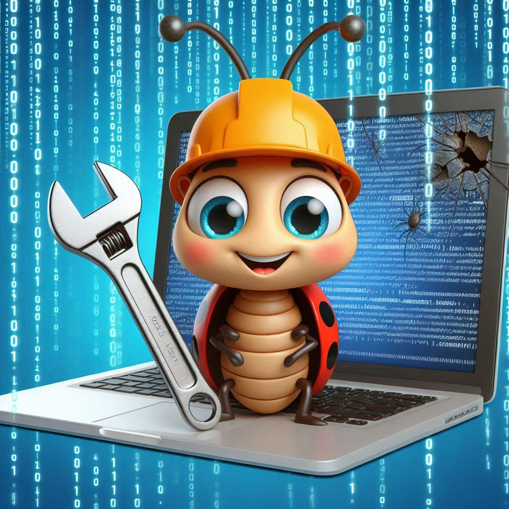

E(xtend) of L(ife) support for various open source projects
 As part of the life cycle of any piece of software you have come to rely on bug fixes for the version you are running on. Once the open source project stops delivering bug fixes you were forced to either to retire the software, upgrade to the latest version or refactor altogether. However with our EOL support you now have another option. The option to continue to get bug fixes!
Keeping your software secure is extremely important to you and as part of our support offering we deliver security patches whenever needed and applicable to the version of your software. Rest assured we believe supporting you here is extremely important to us as well!
Please contact us at sales@manorrock.com for pricing and more details.
We sell support for any Apache Tomcat version that is no longer supported by the open source project (8.5 and older).
Support is available for purchase for any Spring Boot version that is no longer supported by the open source project (2.6 and older).
Support can be obtained for any WildFly version.
Is the open source project you depend on not listed here? Please reach out and we can discuss if we can support you!